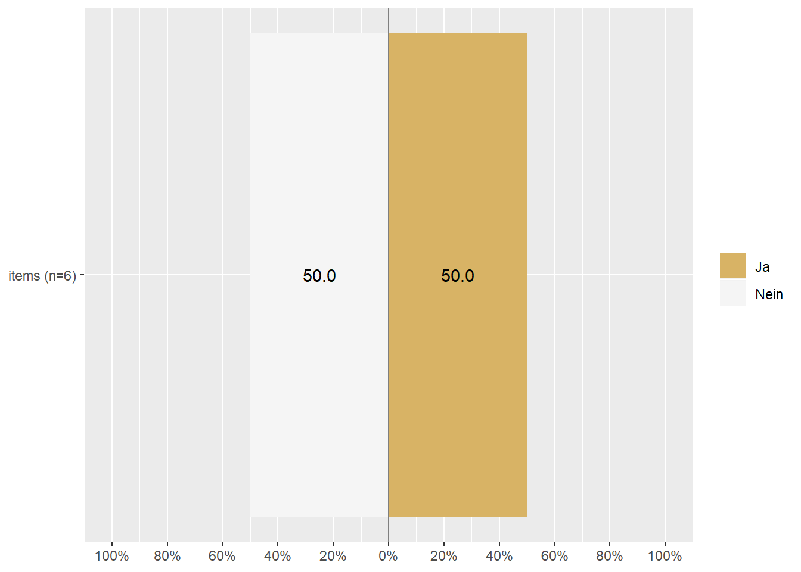
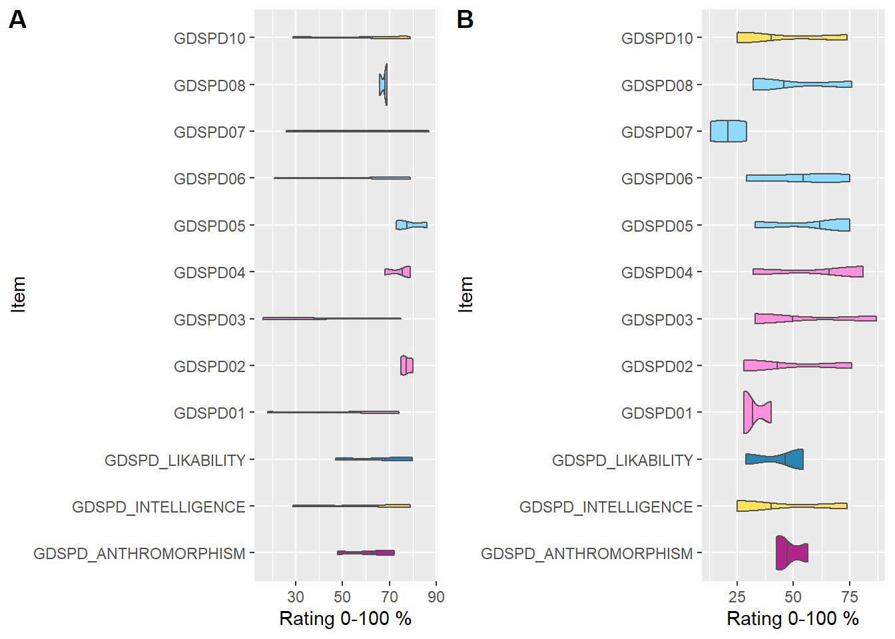
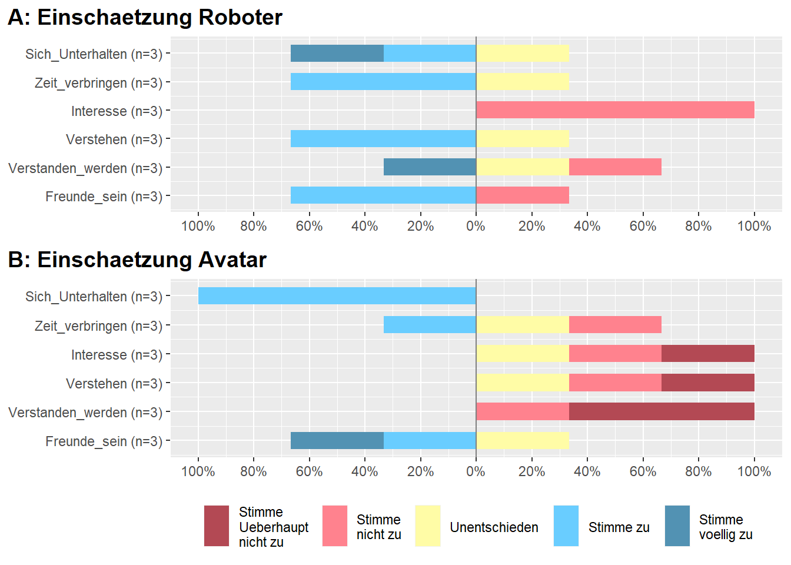
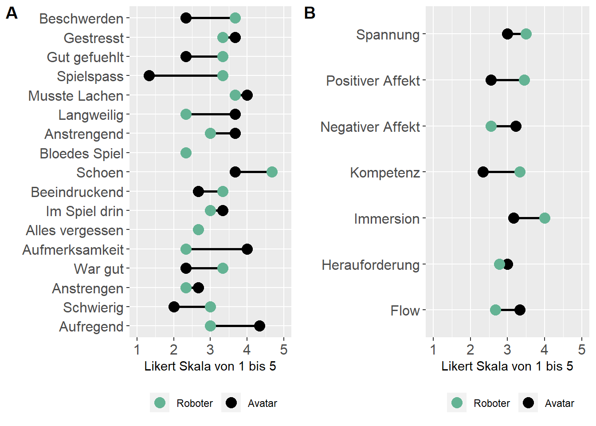
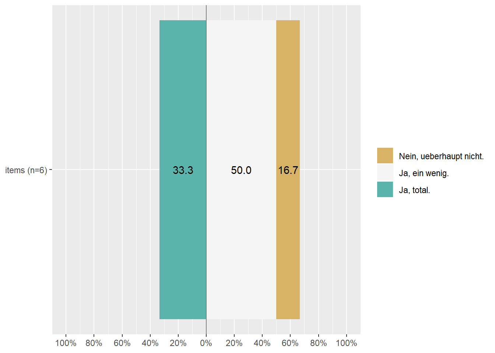
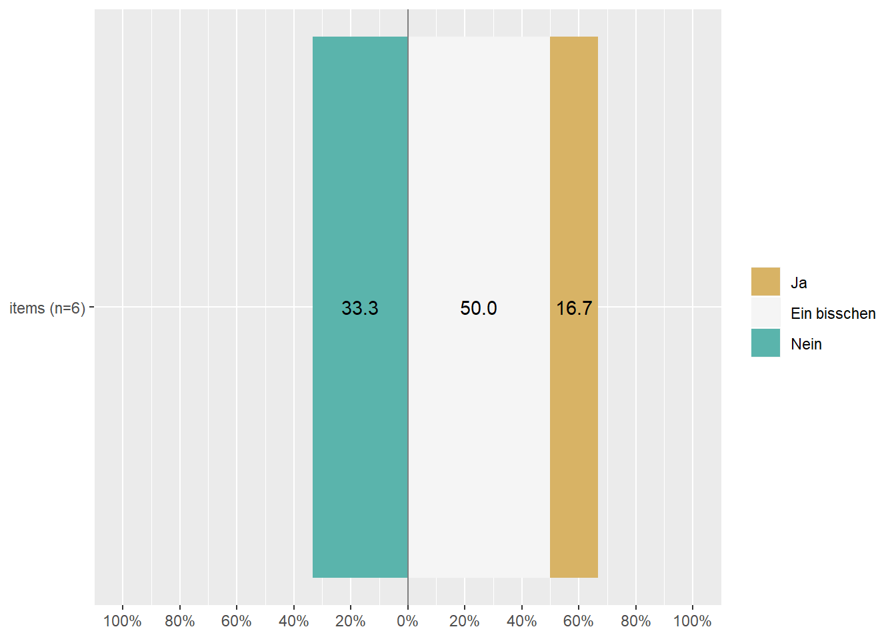
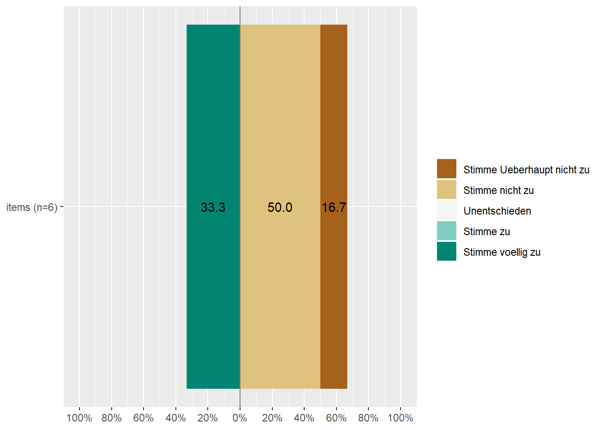
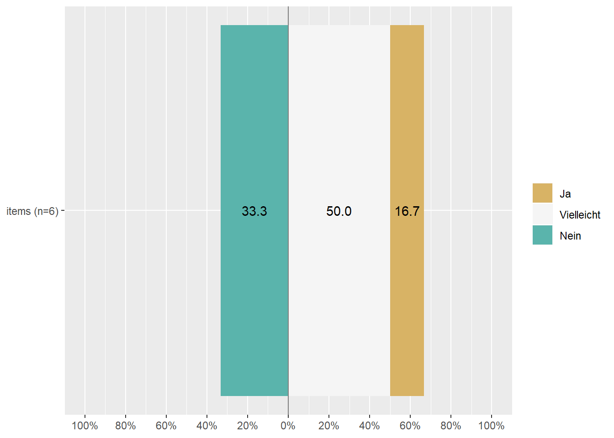

Zunächst werden die Datensets “Kinder_full”, “Eltern_full” und “Eltern_Uebung” geladen und überprüft, wie viele Probanden gemessen wurden und wie die Verteilung auf die Gruppen (Avatar vs Roboter) aussieht.
# Importiere CSV Datei mit UTF-8 encoding, Spaltentrenner ; und Dezimalzeichen ,
ds = read.csv("Eltern_Kids_full_uebung.csv", encoding = "UTF-8",header = TRUE,sep = ";",dec = ",",
row.names = "CASE",as.is = TRUE,check.names = TRUE, fill = TRUE, strip.white = TRUE)
# Lade Screening Datenset fuer Information zu Alter / Geschlecht
screen = readRDS("Traits_screening", refhook = NULL)
# Fuege das Screening-Datenset dem ds-Datenset hinzu
ds <- merge(ds,screen, all = T)
# Frageboegen getrennt auswerten
# Eltern_uebung
ds_uebung = ds %>% dplyr::filter(QUESTNNR=='Eltern_Uebung')
ds_uebung <- as.data.table(ds_uebung)
ds_uebung[,EXC_NR := as.factor(EXC_NR)]
# Zunaechst nur die Daten der ID "testtest" verwenden
ds_uebung <- ds_uebung[PID == "testtest",]
# Eltern_full, kids_full
ds = ds %>% dplyr::filter(QUESTNNR=='Eltern_full' | QUESTNNR=='Kinder_full')
# Nur abgeschlossene Eintraege beruecksichtigen (FINISHED sollte Wert 1 haben)
ds = ds %>% dplyr::filter(as.logical(FINISHED))
# Nur Einträge mit eindeutiger Gruppe berücksichtigen
ds = ds %>% dplyr::filter(ID03 == "1" | ID03 == "2")
# Zeige Anzahl der TeilnehmerInnen
show(paste("Anzahl Kinder:", length(unique(ds$PID))))## [1] "Anzahl Kinder: 18"# Dieser Faktor gibt an, ob der Teilnehmer mit Roboter oder Tablet interagierte
ds$TABLET_ROBOT = factor(
ds$ID03,
levels = c("1", "2"),
labels = c("Roboter", "Avatar"),
ordered = FALSE
)
summary(ds$TABLET_ROBOT)## Roboter Avatar
## 28 11# Waehle Kinder-Fragebogen aus
ds_kind = ds %>% dplyr::filter(QUESTNNR=='Kinder_full') %>%
# Nur abgeschlossene Eintraege beruecksichtigen (FINISHED sollte Wert 1 haben)
dplyr::filter(as.logical(FINISHED))
# Nur Frageboegen mit PID berücksichtigen
ds_kind <- ds_kind[-which(ds_kind$PID ==""),]
# Master-Table fuer Kind-Fragebogen Roboter-Interaktion
int_kind = data.frame(ds_kind$PID)
colnames(int_kind ) = "ID"
# Gruppenrecodierung: Avatar vs Roboter
int_kind$group = ds_kind$ID03
int_kind$group [int_kind$group == 1] = "Roboter"
int_kind$group [int_kind$group == 2] = "Avatar"
# Waehle Eltern-Fragebogen aus
ds_eltern = ds %>% dplyr::filter(QUESTNNR=='Eltern_full') %>%
# Nur abgeschlossene Eintraege beruecksichtigen (FINISHED sollte Wert 1 haben)
dplyr::filter(as.logical(FINISHED))
# Master-Table fuer eltern-Fragebogen Roboter-Interaktion
int_eltern = data.frame(ds_eltern$PID)
colnames(int_eltern ) = "ID"
# Gruppenrecodierung: Avatar vs Roboter
int_eltern$group = ds_eltern$ID03
int_eltern$group [int_eltern$group == 1] = "Roboter"
int_eltern$group [int_eltern$group == 2] = "Avatar"Hast du schon einmal mit einem Roboter gespielt?
# reference: https://strengejacke.github.io/sjPlot/reference/plot_likert.html
# Fuege Items zu Master-Table fuer Kinderbefragung hinzu
int_kind$robot_kenn = ds_kind$RB_ERFAHRUNG
# Waehle nur dieses Items aus
int_kind_er = as_tibble(int_kind)
int_kind_er = int_kind_er %>% dplyr::select(robot_kenn)
# Kodiere Item um, definiere levels, faktorisiere und ordne sie
int_kind_er = data.frame(lapply(int_kind_er, factor, ordered=TRUE,
levels=1:2,
labels=c("Ja","Nein")))
# Plotte Likert-Skala fuer Items getrennt nach Roboter- und Avatar-Gruppe
plot_likert(int_kind_er, catcount = 2)
Wie aufgeregt bist du? & Wie fühlst du dich?
## Variable F_AROUSAL und F_VALENZ
ds_kind <- as.data.table(ds_kind)
ds_kind[,.(Mittelwert_Arousal = round(mean(F_AROUSAL,na.rm = TRUE),2),Mittelwert_Valenz = round(mean(F_VALENZ,na.rm = TRUE),2))]## Mittelwert_Arousal Mittelwert_Valenz
## 1: 36.5 57 ds_kind <- as.data.frame(ds_kind)Hier werden semantische Differentiale auf einer Spanne von 1 bis 101 bewertet. Die Wertungen koennen auch zu drei Skalen zusammengefasst werden.
# Berechnen der Skalenwerte von Mittelwerten der dazugehoerigen Items
ds_kind$GDSPD_ANTHROMORPHISM = rowMeans(ds_kind[c("GDSPD01", "GDSPD02", "GDSPD03", "GDSPD04")], na.rm = T)
ds_kind$GDSPD_LIKABILITY = rowMeans(ds_kind[c("GDSPD05", "GDSPD06", "GDSPD07", "GDSPD08")], na.rm = T)
ds_kind$GDSPD_INTELLIGENCE = rowMeans(ds_kind[c("GDSPD10")], na.rm = T)
# Zuordnen der entsprechenden Extrema-Beschriftungen
attr(ds_kind$GDSPD01,"1") = "Wie eine Maschine"
attr(ds_kind$GDSPD01,"101") = "Wie ein Mensch"
attr(ds_kind$GDSPD02,"1") = "Unecht"
attr(ds_kind$GDSPD02,"101") = "Natuerlich"
attr(ds_kind$GDSPD03,"1") = "Kuenstlich"
attr(ds_kind$GDSPD03,"101") = "Realistisch"
attr(ds_kind$GDSPD04,"1") = "Steif beim Bewegen"
attr(ds_kind$GDSPD04,"101") = "Fluessig beim Bewegen"
attr(ds_kind$GDSPD05,"1") = "Unfreundlich"
attr(ds_kind$GDSPD05,"101") = "Freundlich"
attr(ds_kind$GDSPD06,"1") = "Unangenehm"
attr(ds_kind$GDSPD06,"101") = "Angenehm"
attr(ds_kind$GDSPD07,"1") = "Unhoeflich"
attr(ds_kind$GDSPD07,"101") = "Hoeflich"
attr(ds_kind$GDSPD08,"1") = "Furchtbar"
attr(ds_kind$GDSPD08,"101") = "Nett"
attr(ds_kind$GDSPD10,"1") = "Dumm"
attr(ds_kind$GDSPD10,"101") = "Klug"
# Aufteilen in Kind- und Eltern-Rating
int_kind$GDSPD01 = ds_kind$GDSPD01
int_kind$GDSPD02 = ds_kind$GDSPD02
int_kind$GDSPD03 = ds_kind$GDSPD03
int_kind$GDSPD04 = ds_kind$GDSPD04
int_kind$GDSPD05 = ds_kind$GDSPD05
int_kind$GDSPD06 = ds_kind$GDSPD06
int_kind$GDSPD07 = ds_kind$GDSPD07
int_kind$GDSPD08 = ds_kind$GDSPD08
int_kind$GDSPD10 = ds_kind$GDSPD10
int_kind$GDSPD_ANTHROMORPHISM = ds_kind$GDSPD_ANTHROMORPHISM
int_kind$GDSPD_LIKABILITY = ds_kind$GDSPD_LIKABILITY
int_kind$GDSPD_INTELLIGENCE = ds_kind$GDSPD_INTELLIGENCE
# Berechnen der Skalenwerte von Mittelwerten der dazugeh?rigen Items
ds_eltern$GDSPD_ANTHROMORPHISM = rowMeans(ds_eltern[c("GDSPD01", "GDSPD02", "GDSPD03", "GDSPD04")], na.rm = T)
ds_eltern$GDSPD_LIKABILITY = rowMeans(ds_eltern[c("GDSPD05", "GDSPD06", "GDSPD07", "GDSPD08")], na.rm = T)
ds_eltern$GDSPD_INTELLIGENCE = rowMeans(ds_eltern[c("GDSPD10")], na.rm = T)
# Zuordnen der entsprechenden Extrema-Beschriftungen
attr(ds_eltern$GDSPD01,"1") = "Wie eine Maschine"
attr(ds_eltern$GDSPD01,"101") = "Wie ein Mensch"
attr(ds_eltern$GDSPD02,"1") = "Unecht"
attr(ds_eltern$GDSPD02,"101") = "Natuerlich"
attr(ds_eltern$GDSPD03,"1") = "Kuenstlich"
attr(ds_eltern$GDSPD03,"101") = "Realistisch"
attr(ds_eltern$GDSPD04,"1") = "Steif beim Bewegen"
attr(ds_eltern$GDSPD04,"101") = "Fluessig beim Bewegen"
attr(ds_eltern$GDSPD05,"1") = "Unfreundlich"
attr(ds_eltern$GDSPD05,"101") = "Freundlich"
attr(ds_eltern$GDSPD06,"1") = "Unangenehm"
attr(ds_eltern$GDSPD06,"101") = "Angenehm"
attr(ds_eltern$GDSPD07,"1") = "Unhoeflich"
attr(ds_eltern$GDSPD07,"101") = "Hoeflich"
attr(ds_eltern$GDSPD08,"1") = "Furchtbar"
attr(ds_eltern$GDSPD08,"101") = "Nett"
attr(ds_eltern$GDSPD10,"1") = "Dumm"
attr(ds_eltern$GDSPD10,"101") = "Klug"
# Aufteilen in Kind- und Eltern-Rating
int_eltern$GDSPD01 = ds_eltern$GDSPD01
int_eltern$GDSPD02 = ds_eltern$GDSPD02
int_eltern$GDSPD03 = ds_eltern$GDSPD03
int_eltern$GDSPD04 = ds_eltern$GDSPD04
int_eltern$GDSPD05 = ds_eltern$GDSPD05
int_eltern$GDSPD06 = ds_eltern$GDSPD06
int_eltern$GDSPD07 = ds_eltern$GDSPD07
int_eltern$GDSPD08 = ds_eltern$GDSPD08
int_eltern$GDSPD10 = ds_eltern$GDSPD10
int_eltern$GDSPD_ANTHROMORPHISM = ds_eltern$GDSPD_ANTHROMORPHISM
int_eltern$GDSPD_LIKABILITY = ds_eltern$GDSPD_LIKABILITY
int_eltern$GDSPD_INTELLIGENCE = ds_eltern$GDSPD_INTELLIGENCEEinschätzung der Kinder
# Separieren in Avatar- und Roboter-Gruppe
robot_gdspd_kind = int_kind[int_kind$group == "Roboter",]
avatar_gdspd_kind = int_kind[int_kind$group == "Avatar",]
# Zeichne Violin-Plot
robo_kind_gdspd = robot_gdspd_kind[grep("GDSPD", colnames(robot_gdspd_kind ))] %>% tidyr::gather() %>% ggplot(aes(y=value, x=key, fill = key, color = key))+
geom_violin(draw_quantiles = 0.5)+
scale_color_manual(values=c("gray32","gray32","gray32","gray32","gray32",
"gray32","gray32","gray32","gray32","gray32","gray32","gray32"))+
scale_fill_manual(values=c("#B3238B","#FFE25D","#2886B3","#FF8FDF","#FF8FDF","#FF8FDF","#FF8FDF",
"#8FDBFF","#8FDBFF","#8FDBFF","#8FDBFF","#FFE25D"))+
theme(legend.position = "none")+
coord_flip()+
ylab("Rating 0-100 %")+
xlab("Item")
# Zeichne Violin-Plot
avatar_kind_gdspd = avatar_gdspd_kind[grep("GDSPD", colnames(avatar_gdspd_kind ))] %>% tidyr::gather() %>% ggplot(aes(y=value, x=key, fill = key, color = key))+
geom_violin(draw_quantiles = 0.5)+
scale_color_manual(values=c("gray32","gray32","gray32","gray32","gray32",
"gray32","gray32","gray32","gray32","gray32","gray32","gray32"))+
scale_fill_manual(values=c("#B3238B","#FFE25D","#2886B3","#FF8FDF","#FF8FDF","#FF8FDF","#FF8FDF",
"#8FDBFF","#8FDBFF","#8FDBFF","#8FDBFF","#FFE25D"))+
theme(legend.position = "none")+
coord_flip()+
ylab("Rating 0-100 %")+
xlab("Item")
combine_plots(robo_kind_gdspd, avatar_kind_gdspd,
ncol = 2, nrow=1,
labels = c("A", "B"),
caption.color = "black")
Einschätzung der Eltern
# Separieren in Avatar- und Roboter-Gruppe
robot_gdspd_eltern = int_eltern[int_eltern$group == "Roboter",]
avatar_gdspd_eltern = int_eltern[int_eltern$group == "Avatar",]
# Zeichne Violin-Plot
robo_eltern_gdspd = robot_gdspd_eltern[grep("GDSPD", colnames(robot_gdspd_eltern ))] %>% tidyr::gather() %>% ggplot(aes(y=value, x=key, fill = key, color = key))+
geom_violin(draw_quantiles = 0.5)+
scale_color_manual(values=c("gray32","gray32","gray32","gray32","gray32",
"gray32","gray32","gray32","gray32","gray32","gray32","gray32"))+
scale_fill_manual(values=c("#B3238B","#FFE25D","#2886B3","#FF8FDF","#FF8FDF","#FF8FDF","#FF8FDF",
"#8FDBFF","#8FDBFF","#8FDBFF","#8FDBFF","#FFE25D"))+
theme(legend.position = "none")+
coord_flip()+
ylab("Rating 0-100 %")+
xlab("Item")
# Zeichne Violin-Plot
avatar_eltern_gdspd = avatar_gdspd_eltern[grep("GDSPD", colnames(avatar_gdspd_eltern ))] %>% tidyr::gather() %>% ggplot(aes(y=value, x=key, fill = key, color = key))+
geom_violin(draw_quantiles = 0.5)+
scale_color_manual(values=c("gray32","gray32","gray32","gray32","gray32",
"gray32","gray32","gray32","gray32","gray32","gray32","gray32"))+
scale_fill_manual(values=c("#B3238B","#FFE25D","#2886B3","#FF8FDF","#FF8FDF","#FF8FDF","#FF8FDF",
"#8FDBFF","#8FDBFF","#8FDBFF","#8FDBFF","#FFE25D"))+
theme(legend.position = "none")+
coord_flip()+
ylab("Rating 0-100 %")+
xlab("Item")
combine_plots(robo_eltern_gdspd, avatar_eltern_gdspd,
ncol = 2, nrow=1,
labels = c("A", "B"),
caption.color = "black")Mittels eines Venn-Diagramms in drei Stufen von Nähe haben die Kinder ihre gefühlte Nähe zum Roboter bewertet. Die Grafiken zeigten entweder einen Jungen oder ein Mädchen als Avatar des Kindes.
# Es gibt zwei Versionen des IOS (fuer Maedchen vs Jungen)in SocsciSurvey.
# Fuer jedes Kind existiert aber hoechstens ein Rating, weshalb das Rating fuer IOS_F uebernommen wird,
# falls IOS_M keinen Wert enthaelt.
#
#
# int_kind$IOS = recode(ds_kind$IOS_M, .missing = ds_kind$IOS_F)
#
# int_kind$IOS = factor(
# int_kind$IOS,
# levels = c("1", "2", "3"),
# labels = c("Gar nicht nah", "Mittelmaessig nah", "sehr nah"),
# ordered = TRUE
# )
#
# # Trenne nach Avatar / Roboter Gruppe
# robot_int_kind = int_kind[int_kind$group == "Roboter",]
# avatar_int_kind = int_kind[int_kind$group == "Avatar",]
#
# # Waehle nur dieses Item aus
# robot_int_kind = as_tibble(robot_int_kind)
# robot_int_ios = robot_int_kind %>% dplyr::select(IOS)
#
# avatar_int_kind = as_tibble(avatar_int_kind)
# avatar_int_ios = avatar_int_kind %>% dplyr::select(IOS)
#
# # Kombiniere Daten von Roboter- und Avatar-Einschaetzung
# # Problem: Die Dataframes haben eine untersch. Laenge
# comb_int_use = merge(robot_int_ios,avatar_int_ios, by = "row.names", all = T, suffixes = c("",""))
# comb_int_use$Row.names <- NULL
#
# # Plotte Likert-Skala fuer Items getrennt nach Roboter- und Avatar-Gruppe
# plot_likert(comb_int_use, catcount = 3, wrap.legend.labels = 10, values = FALSE,
# c(rep("A: Einschaetzung Roboter", 1), rep("B: Einschaetzung Avatar", 1)),
# geom.colors = c("#B34954","#FFFCA6","#5292B3"),
# rel_heights = c(6, 8))Einschätzung der Kinder
# reference: https://strengejacke.github.io/sjPlot/reference/plot_likert.html
# Fuege Items zu Master-Table fuer Kinderbefragung hinzu
int_kind$Sich_Unterhalten = ds_kind$RB_UNTERHALTEN
int_kind$Zeit_verbringen = ds_kind$RB_ZEIT
int_kind$Interesse = ds_kind$RB_INTERESSE
int_kind$Verstehen = ds_kind$RB_VERSTEHEN
int_kind$Verstanden_werden = ds_kind$RB_VERSTANDEN
int_kind$Freunde_sein = ds_kind$RB_FREUNDE
# Trenne nach Avatar / Roboter Gruppe
robot_int_kind = int_kind[int_kind$group == "Roboter",]
avatar_int_kind = int_kind[int_kind$group == "Avatar",]
# Waehle nur diese Items aus
robot_int_kind = as_tibble(robot_int_kind)
robot_int_use = robot_int_kind %>% dplyr::select(Sich_Unterhalten:Freunde_sein)
avatar_int_kind = as_tibble(avatar_int_kind)
avatar_int_use = avatar_int_kind %>% dplyr::select(Sich_Unterhalten:Freunde_sein)
# Kodiere Items um, definiere levels, faktorisiere und ordne sie
robot_int_use = data.frame(lapply(robot_int_use, factor, ordered=TRUE,
levels=1:5,
labels=c("Stimme Ueberhaupt nicht zu","Stimme nicht zu",
"Unentschieden","Stimme zu","Stimme voellig zu")))
avatar_int_use = data.frame(lapply(avatar_int_use, factor, ordered=TRUE,
levels=1:5,
labels=c("Stimme Ueberhaupt nicht zu","Stimme nicht zu",
"Unentschieden","Stimme zu","Stimme voellig zu")))
# Kombiniere Daten von Roboter- und Avatar-Einschaetzung
comb_int_use = merge(robot_int_use,avatar_int_use, by = "row.names", all = T, suffixes = c("",""))
comb_int_use$Row.names <- NULL
# Plotte Likert-Skala fuer Items getrennt nach Roboter- und Avatar-Gruppe
plot_likert(comb_int_use, catcount = 5, wrap.legend.labels = 10, values = FALSE,
c(rep("A: Einschaetzung Roboter", 6), rep("B: Einschaetzung Avatar", 6)),
geom.colors = c("#B34954","#FF828E","#FFFCA6","#69CDFF","#5292B3"),
rel_heights = c(6, 8))Einschätzung der Eltern
# reference: https://strengejacke.github.io/sjPlot/reference/plot_likert.html
# Fuege Items zu Master-Table fuer Elternerbefragung hinzu
int_eltern$Sich_Unterhalten = ds_eltern$B201_01
int_eltern$Zeit_verbringen = ds_eltern$B201_02
int_eltern$Interesse = ds_eltern$B201_03
int_eltern$Verstehen = ds_eltern$B201_04
int_eltern$Verstanden_werden = ds_eltern$B201_05
int_eltern$Freunde_sein = ds_eltern$B201_06
# Trenne nach Avatar / Roboter Gruppe
robot_int_eltern = int_eltern[int_eltern$group == "Roboter",]
avatar_int_eltern = int_eltern[int_eltern$group == "Avatar",]
# Waehle nur diese Items aus
robot_int_eltern = as_tibble(robot_int_eltern)
robot_int_use = robot_int_eltern %>% dplyr::select(Sich_Unterhalten:Freunde_sein)
robot_int_use = as.data.table(robot_int_use)
avatar_int_eltern = as_tibble(avatar_int_eltern)
avatar_int_use = avatar_int_eltern %>% dplyr::select(Sich_Unterhalten:Freunde_sein)
# Kodiere Items um, definiere levels, faktorisiere und ordne sie
robot_int_use = data.frame(lapply(robot_int_use, factor, ordered=TRUE,
levels=1:5,
labels=c("Stimme Ueberhaupt nicht zu","Stimme nicht zu",
"Unentschieden","Stimme zu","Stimme voellig zu")))
avatar_int_use = data.frame(lapply(avatar_int_use, factor, ordered=TRUE,
levels=1:5,
labels=c("Stimme Ueberhaupt nicht zu","Stimme nicht zu",
"Unentschieden","Stimme zu","Stimme voellig zu")))
# Kombiniere Daten von Roboter- und Avatar-Einschaetzung
comb_int_use = merge(robot_int_use,avatar_int_use, by = "row.names", all = T, suffixes = c("",""))
comb_int_use$Row.names <- NULL
# Plotte Likert-Skala fuer Items getrennt nach Roboter- und Avatar-Gruppe
plot_likert(comb_int_use, catcount = 5, wrap.legend.labels = 10, values = FALSE,
c(rep("A: Einschaetzung Roboter", 6), rep("B: Einschaetzung Avatar", 6)),
geom.colors = c("#B34954","#FF828E","#FFFCA6","#69CDFF","#5292B3"),
rel_heights = c(6, 8))
# Extrahiere KidsGEQ Items
int_kind$KGEQ01 = ds_kind$K102_01
int_kind$KGEQ02 = ds_kind$K102_02
int_kind$KGEQ03 = ds_kind$K102_03
int_kind$KGEQ04 = ds_kind$K102_04
int_kind$KGEQ05 = ds_kind$K102_05
int_kind$KGEQ06 = ds_kind$K102_06
int_kind$KGEQ07 = ds_kind$K102_07
int_kind$KGEQ08 = ds_kind$K102_08
int_kind$KGEQ09 = ds_kind$K102_09
int_kind$KGEQ10 = ds_kind$K102_10
int_kind$KGEQ11 = ds_kind$K102_11
int_kind$KGEQ12 = ds_kind$K102_12
int_kind$KGEQ13 = ds_kind$K102_13
int_kind$KGEQ14 = ds_kind$K102_14
int_kind$KGEQ15 = ds_kind$K102_15
int_kind$KGEQ16 = ds_kind$K102_16
int_kind$KGEQ17 = ds_kind$K102_17
# Berechne Mittelwerte fuer die Dimensionen fuer jeden Probanden
# her= Herausforderung, komp = Kompetenz. flow = Flow-Erleben, imm = Immersion, neg_aff = Negativer Affekt, pos_aff = Positiver Affekt, span = Spannung
for (i in 1:nrow(int_kind)) {
int_kind$GEQ_her[i] = rowMeans(int_kind[i,c("KGEQ01","KGEQ02","KGEQ03")], na.rm = FALSE, dims = 1)
int_kind$GEQ_komp[i] = int_kind[i,c("KGEQ04")]
int_kind$GEQ_flow[i] = rowMeans(int_kind[i,c("KGEQ05","KGEQ06","KGEQ07")], na.rm = FALSE, dims = 1)
int_kind$GEQ_imm[i] = rowMeans(int_kind[i,c("KGEQ08","KGEQ09")], na.rm = FALSE, dims = 1)
int_kind$GEQ_neg_aff[i] = rowMeans(int_kind[i,c("KGEQ10","KGEQ11","KGEQ12")], na.rm = FALSE, dims = 1)
int_kind$GEQ_pos_aff[i] = rowMeans(int_kind[i,c("KGEQ13","KGEQ14","KGEQ15")], na.rm = FALSE, dims = 1)
int_kind$GEQ_span[i] = rowMeans(int_kind[i,c("KGEQ16","KGEQ17")], na.rm = FALSE, dims = 1)
}Einschätzung der Kinder zum Spiel, welches sie entweder mit dem Roboter oder Avatar gespielt haben:
## Fuer Visualisierung
# Teile in Roboter- und Avatar-Gruppe
robot_int_kind = int_kind[int_kind$group == "Roboter",]
avatar_int_kind = int_kind[int_kind$group == "Avatar",]
# Separieren von Einzelnen Items und Dimensionen
robot_int_kind_item = robot_int_kind %>% dplyr::select(KGEQ01:KGEQ17)
robot_int_kind_dim = robot_int_kind %>% dplyr::select(GEQ_her:GEQ_span)
avatar_int_kind_item = avatar_int_kind %>% dplyr::select(KGEQ01:KGEQ17)
avatar_int_kind_dim = avatar_int_kind %>% dplyr::select(GEQ_her:GEQ_span)
# Berechne Mittelwert fuer jedes Item
geq_mean_robo_item = colMeans(robot_int_kind_item, na.rm = TRUE, dims = 1)
geq_mean_avat_item = colMeans(avatar_int_kind_item, na.rm = TRUE, dims = 1)
geq_mean_robo_dim = colMeans(robot_int_kind_dim, na.rm = TRUE, dims = 1)
geq_mean_avat_dim = colMeans(avatar_int_kind_dim, na.rm = TRUE, dims = 1)
# Definiere Namen der Items
clnames_all = c("Aufregend", "Schwierig","Anstrengen","War gut","Aufmerksamkeit",
"Alles vergessen", "Im Spiel drin", "Beeindruckend",
"Schoen","Bloedes Spiel","Anstrengend","Langweilig","Musste Lachen",
"Spielspass","Gut gefuehlt", "Gestresst","Beschwerden")
clnames_all_dim = c("Herauforderung", "Kompetenz","Flow", "Immersion", "Negativer Affekt",
"Positiver Affekt","Spannung")
# Kombinieren von Mittelwerten und Item-Namen
int_kind_geq_item_graph = data.frame(clnames_all, geq_mean_robo_item, geq_mean_avat_item)
int_kind_geq_dim_graph = data.frame(clnames_all_dim, geq_mean_robo_dim, geq_mean_avat_dim)
# Mittelwert ueber beide Bedingungen berechnen
int_kind_geq_item_graph = int_kind_geq_item_graph %>%
mutate(name = fct_reorder(clnames_all, geq_mean_robo_item)) %>%
mutate(clnames_all=factor(clnames_all, clnames_all)) %>%
mutate(mymean = mean(c(geq_mean_robo_item,geq_mean_avat_item) ))
int_kind_geq_dim_graph = int_kind_geq_dim_graph %>%
mutate(name = fct_reorder(clnames_all_dim, geq_mean_robo_dim)) %>%
mutate(clnames_all=factor(clnames_all_dim, clnames_all)) %>%
mutate(mymean = mean(c(geq_mean_robo_dim,geq_mean_avat_dim) ))
# Plot
# Farben definieren
colors = c("#64B394","black")
# Plotten
geq_kids_item = ggplot(int_kind_geq_item_graph) +
geom_segment(aes(x=clnames_all, xend=clnames_all, y= geq_mean_robo_item, yend=geq_mean_avat_item), color="black",size=1) +
geom_point(aes(x=clnames_all, y=geq_mean_robo_item, color = "Roboter"), size=4) +
geom_point(aes(x=clnames_all, y=geq_mean_avat_item, color = "Avatar"), size=4 ) +
coord_flip()+
theme(legend.position = "bottom", axis.text.x = element_text(size = 12),axis.text.y = element_text(size = 12))+
xlab("") +
ylab("Likert Skala von 1 bis 5")+
ylim(1,5)+
scale_color_manual(name = element_blank(), labels = c("Roboter", "Avatar"), values = colors)
geq_kids_dim = ggplot(int_kind_geq_dim_graph) +
geom_segment(aes(x=clnames_all_dim, xend=clnames_all_dim, y= geq_mean_robo_dim, yend=geq_mean_avat_dim), color="black",size=1) +
geom_point(aes(x=clnames_all_dim, y=geq_mean_robo_dim, color = "Roboter"), size=4) +
geom_point(aes(x=clnames_all_dim, y=geq_mean_avat_dim, color = "Avatar"), size=4 ) +
coord_flip()+
theme(legend.position = "bottom", axis.text.x = element_text(size = 12),axis.text.y = element_text(size = 12))+
xlab("") +
ylab("Likert Skala von 1 bis 5")+
ylim(1,5)+
scale_color_manual(name = element_blank(), labels = c("Roboter", "Avatar"), values = colors)
combine_plots(geq_kids_item, geq_kids_dim,
ncol = 2, nrow=1,
labels = c("A", "B"),
caption.color = "black")
# Extrahiere KidsGEQ Items
int_eltern$KGEQ01 = ds_eltern$OLD_EGEQ01
int_eltern$KGEQ02 = ds_eltern$K101_02
int_eltern$KGEQ03 = ds_eltern$OLD_EGEQ02
int_eltern$KGEQ04 = ds_eltern$OLD_EGEQ03
int_eltern$KGEQ05 = ds_eltern$OLD_EGEQ04
int_eltern$KGEQ06 = ds_eltern$OLD_EGEQ05
int_eltern$KGEQ07 = ds_eltern$OLD_EGEQ06
int_eltern$KGEQ08 = ds_eltern$OLD_EGEQ07
int_eltern$KGEQ09 = ds_eltern$OLD_EGEQ08
int_eltern$KGEQ10 = ds_eltern$OLD_EGEQ09
int_eltern$KGEQ11 = ds_eltern$OLD_EGEQ10
int_eltern$KGEQ12 = ds_eltern$OLD_EGEQ11
int_eltern$KGEQ13 = ds_eltern$OLD_EGEQ12
int_eltern$KGEQ14 = ds_eltern$OLD_EGEQ13
int_eltern$KGEQ15 = ds_eltern$OLD_EGEQ14
int_eltern$KGEQ16 = ds_eltern$K101_16
int_eltern$KGEQ17 = ds_eltern$K101_17
# Berechne Mittelwerte fuer die Dimensionen fuer jeden Probanden
# her= Herausforderung, komp = Kompetenz. flow = Flow-Erleben, imm = Immersion, neg_aff = Negativer Affekt, pos_aff = Positiver Affekt, span = Spannung
for (i in 1: nrow(int_eltern)) {
int_eltern$GEQ_her[i] = rowMeans(int_eltern[i,c("KGEQ01","KGEQ02","KGEQ03")], na.rm = FALSE, dims = 1)
int_eltern$GEQ_komp[i] = int_eltern[i,c("KGEQ04")]
int_eltern$GEQ_flow[i] = rowMeans(int_eltern[i,c("KGEQ05","KGEQ06","KGEQ07")], na.rm = FALSE, dims = 1)
int_eltern$GEQ_imm[i] = rowMeans(int_eltern[i,c("KGEQ08","KGEQ09")], na.rm = FALSE, dims = 1)
int_eltern$GEQ_neg_aff[i] = rowMeans(int_eltern[i,c("KGEQ10","KGEQ11","KGEQ12")], na.rm = FALSE, dims = 1)
int_eltern$GEQ_pos_aff[i] = rowMeans(int_eltern[i,c("KGEQ13","KGEQ14","KGEQ15")], na.rm = FALSE, dims = 1)
int_eltern$GEQ_span[i] = rowMeans(int_eltern[i,c("KGEQ16","KGEQ17")], na.rm = FALSE, dims = 1)
}Eltern-Einschätzung zum Spiel, welches ihr Kind entweder mit dem Roboter oder Avatar gespielt hat:
## F?r Visualisierung
robot_int_eltern = int_eltern[int_eltern$group == "Roboter",]
avatar_int_eltern = int_eltern[int_eltern$group == "Avatar",]
# Separieren von Einzelnen Items und Dimensionen
robot_int_eltern_item = robot_int_eltern %>% dplyr::select(KGEQ01:KGEQ17)
robot_int_eltern_dim = robot_int_eltern %>% dplyr::select(GEQ_her:GEQ_span)
avatar_int_eltern_item = avatar_int_eltern %>% dplyr::select(KGEQ01:KGEQ17)
avatar_int_eltern_dim = avatar_int_eltern %>% dplyr::select(GEQ_her:GEQ_span)
# Berechne Mittelwert fuer jedes Item
geq_mean_robo_item = colMeans(robot_int_eltern_item, na.rm = TRUE, dims = 1)
geq_mean_avat_item = colMeans(avatar_int_eltern_item, na.rm = TRUE, dims = 1)
geq_mean_robo_dim = colMeans(robot_int_eltern_dim, na.rm = TRUE, dims = 1)
geq_mean_avat_dim = colMeans(avatar_int_eltern_dim, na.rm = TRUE, dims = 1)
# Definiere Namen der Items
clnames_all = c("Aufregend", "Schwierig","Anstrengen","War gut","Aufmerksamkeit",
"Alles vergessen", "Im Spiel drin", "Beeindruckend",
"Schoen","Bloedes Spiel","Anstrengend","Langweilig","Musste Lachen",
"Spielspass","Gut gefuehlt", "Gestresst","Beschwerden")
clnames_all_dim = c("Herauforderung", "Kompetenz","Flow", "Immersion", "Negativer Affekt",
"Positiver Affekt","Spannung")
# Kombinieren von Mittelwerten und Item-Namen
int_eltern_geq_item_graph = data.frame(clnames_all, geq_mean_robo_item, geq_mean_avat_item)
int_eltern_geq_dim_graph = data.frame(clnames_all_dim, geq_mean_robo_dim, geq_mean_avat_dim)
# Mittelwert über beide Bedingungen berechnen
int_eltern_geq_item_graph = int_eltern_geq_item_graph %>%
mutate(name = fct_reorder(clnames_all, geq_mean_robo_item)) %>%
mutate(clnames_all=factor(clnames_all, clnames_all)) %>%
mutate(mymean = mean(c(geq_mean_robo_item,geq_mean_avat_item) ))
int_eltern_geq_dim_graph = int_eltern_geq_dim_graph %>%
mutate(name = fct_reorder(clnames_all_dim, geq_mean_robo_dim)) %>%
mutate(clnames_all=factor(clnames_all_dim, clnames_all)) %>%
mutate(mymean = mean(c(geq_mean_robo_dim,geq_mean_avat_dim) ))
# Plot
# Farben definieren
colors = c("#A84A85","black")
# Plotten
geq_kids_item = ggplot(int_eltern_geq_item_graph) +
geom_segment(aes(x=clnames_all, xend=clnames_all, y= geq_mean_robo_item, yend=geq_mean_avat_item), color="black",size=1) +
geom_point(aes(x=clnames_all, y=geq_mean_robo_item, color = "Roboter"), size=4) +
geom_point(aes(x=clnames_all, y=geq_mean_avat_item, color = "Avatar"), size=4 ) +
coord_flip()+
theme(legend.position = "bottom", axis.text.x = element_text(size = 12),axis.text.y = element_text(size = 12))+
xlab("") +
ylab("Likert Skala von 1 bis 5")+
ylim(1,5)+
scale_color_manual(name = element_blank(), labels = c("Roboter", "Avatar"), values = colors)
geq_kids_dim = ggplot(int_eltern_geq_dim_graph) +
geom_segment(aes(x=clnames_all_dim, xend=clnames_all_dim, y= geq_mean_robo_dim, yend=geq_mean_avat_dim), color="black",size=1) +
geom_point(aes(x=clnames_all_dim, y=geq_mean_robo_dim, color = "Roboter"), size=4) +
geom_point(aes(x=clnames_all_dim, y=geq_mean_avat_dim, color = "Avatar"), size=4 ) +
coord_flip()+
theme(legend.position = "bottom", axis.text.x = element_text(size = 12),axis.text.y = element_text(size = 12))+
xlab("") +
ylab("Likert Skala von 1 bis 5")+
ylim(1,5)+
scale_color_manual(name = element_blank(), labels = c("Roboter", "Avatar"), values = colors)
combine_plots(geq_kids_item, geq_kids_dim,
ncol = 2, nrow=1,
labels = c("A", "B"),
caption.color = "black")Hattest du generell das Gefühl, dass das Spiel deine Aufregung steigert, also dich nervös macht, oder etwas stresst?
# Fuege Items zu Master-Table fuer Kinderbefragung hinzu
int_kind$spielstress = ds_kind$QF01
# Waehle nur dieses Items aus
int_kind_qual1 = as_tibble(int_kind)
int_kind_qual1 = int_kind_qual1 %>% dplyr::select(spielstress)
# Kodiere Item um, definiere levels, faktorisiere und ordne sie
int_kind_qual1 = data.frame(lapply(int_kind_qual1, factor, ordered=TRUE,
levels=1:3,
labels=c("Nein, ueberhaupt nicht.","Ja, ein wenig.","Ja, total.")))
# Plotte Likert-Skala fuer Items getrennt nach Roboter- und Avatar-Gruppe
plot_likert(int_kind_qual1, catcount = 3)
Zeig mal, wie sehr warst du beim Spielen aufgeregt?
## Aufregung beim gesamten Spiel (Variable QF_02)
round(mean(ds_kind$QF02_01,na.rm = TRUE),2)## [1] 62.25Begründe deine Antwort: Was war vor allem aufregend, was nicht?
Wie könnte man Spiel noch aufregender machen?
Ich habe bei der Atemübung gut mitgemacht.
# Fuege Items zu Master-Table fuer Kinderbefragung hinzu
int_kind$adh_ueb = ds_kind$QF05
# Waehle nur dieses Items aus
int_kind_adh_ueb = as_tibble(int_kind)
int_kind_adh_ueb = int_kind_adh_ueb %>% dplyr::select(adh_ueb)
int_kind_adh_ueb = data.frame(lapply(int_kind_adh_ueb, factor, ordered=TRUE,
levels=1:5,
labels=c("Stimme Ueberhaupt nicht zu","Stimme nicht zu",
"Unentschieden","Stimme zu","Stimme voellig zu")))
# Plotte Likert-Skala fuer Items getrennt nach Roboter- und Avatar-Gruppe
plot_likert(int_kind_adh_ueb, catcount = 5)Wie hast du dich nach den Übungen gefühlt?
# Fuege Items zu Master-Table fuer Kinderbefragung hinzu
int_kind$gef_nach_ue= ds_kind$QF06
# Waehle nur dieses Items aus
int_kind_gef_nach_ue = as_tibble(int_kind)
int_kind_gef_nach_ue = int_kind_gef_nach_ue %>% dplyr::select(spielstress)
# Kodiere Item um, definiere levels, faktorisiere und ordne sie
int_kind_gef_nach_ue = data.frame(lapply(int_kind_gef_nach_ue, factor, ordered=TRUE,
levels=1:3,
labels=c("Entspannter als vorher","Genauso wie vorher","Aufgeregter als vorher")))
# Plotte Likert-Skala fuer Items getrennt nach Roboter- und Avatar-Gruppe
plot_likert(int_kind_gef_nach_ue, catcount = 3) ## Differenzscores berechnen
# Neues Dataset erstellen
diffscores <- ds_uebung[, .(EXC_NR,FG01_01, FG02_01,FG03_01,FG04_01, PID)]
# Gefuehl nach dem Spiel (Variable FG01_01) und nach der Atemübung (Variable FG02_01)
diffscores[,DIFF_VAL := ds_uebung[,.(FG01_01-FG02_01)]]
# Arousal nach dem Spiel (Variable FG03_01) und nach der Atemübung (Variable FG04_01)
diffscores[,DIFF_ARO :=ds_uebung[,.(FG03_01-FG04_01)]]
## Mittelwerte der DIfferenzscores berechnen
diffscores[,.(Mittelwert_Differenzscore_Valenz = round(mean(DIFF_VAL,na.rm = TRUE),2), Mittelwert_Differenzscore_Arousal = round(mean(DIFF_ARO,na.rm = TRUE),2)), keyby = EXC_NR]## EXC_NR Mittelwert_Differenzscore_Valenz
## 1: 1 26
## 2: 2 -5
## 3: 3 -42
## 4: 4 -25
## 5: 5 -36
## 6: 6 -35
## Mittelwert_Differenzscore_Arousal
## 1: -50
## 2: 39
## 3: 39
## 4: 39
## 5: 57
## 6: 32 ## Visualisierung Differenzscores pro Uebung
# Daten fuer ggplot ins Long-format bringen
diffscores_long <- melt(diffscores,id.vars= c("EXC_NR", "PID"), measure.vars=c("DIFF_VAL", "DIFF_ARO"))
# Summary mit Daten fuer den Plot erstellen
summary <- summarySE(diffscores_long, measurevar= "value" , groupvars= c("variable","EXC_NR"),na.rm = TRUE)
# plotten
ggplot(data = summary, aes(x = EXC_NR, y = value, col= variable, ymin = value + sd, ymax = value - sd)) +
geom_pointrange(position = position_dodge(0.5)) +
labs( title = "Mittelwerte", x = "Uebung", y = "Differenz") +
scale_x_discrete(breaks = 1:6, labels = 1:6, limits = 1:6) +
scale_color_discrete (labels = c("Differenz Valenz", "Differenz Arousal")) +
#scale_y_continuous(breaks =) + kann spaeter angepasst werden
theme_bw() +
theme(legend.title = element_blank())Hattest du das Gefühl, dass Robbie dich beim Entspannen gut unterstützt hat?
# Fuege Items zu Master-Table fuer Kinderbefragung hinzu
int_kind$wirk_Robbie = ds_kind$QF07
# Waehle nur dieses Items aus
int_kind_wirk_Robbie = as_tibble(int_kind)
int_kind_wirk_Robbie = int_kind_wirk_Robbie %>% dplyr::select(spielstress)
# Kodiere Item um, definiere levels, faktorisiere und ordne sie
int_kind_wirk_Robbie = data.frame(lapply(int_kind_wirk_Robbie, factor, ordered=TRUE,
levels=1:3,
labels=c("Ja","Ein bisschen","Nein")))
# Plotte Likert-Skala fuer Items getrennt nach Roboter- und Avatar-Gruppe
plot_likert(int_kind_wirk_Robbie, catcount = 3)
Wenn ja, was hat dir vor allem geholfen? Bzw. wenn nein, was hat dir gefehlt, oder was könnte Robbie besser machen?
Ich würde die Atemübung gern wieder machen.
# Fuege Items zu Master-Table fuer Kinderbefragung hinzu
int_kind$ueb_wied = ds_kind$QF09
# Waehle nur dieses Items aus
int_kind_ueb_wied = as_tibble(int_kind)
int_kind_ueb_wied = int_kind_ueb_wied %>% dplyr::select(ueb_wied)
int_kind_ueb_wied = data.frame(lapply(int_kind_ueb_wied, factor, ordered=TRUE,
levels=1:5,
labels=c("Stimme Ueberhaupt nicht zu","Stimme nicht zu",
"Unentschieden","Stimme zu","Stimme voellig zu")))
# Plotte Likert-Skala fuer Items getrennt nach Roboter- und Avatar-Gruppe
plot_likert(int_kind_ueb_wied, catcount = 5)
Könntest du dir vorstellen, dass du im Alltag diese Atemübung ohne Robbie machst, wenn du sehr aufgeregt bist und dich beruhigen möchtest?
# Fuege Items zu Master-Table fuer Kinderbefragung hinzu
int_kind$ueb_alltag = ds_kind$QF10
# Waehle nur dieses Item aus
int_kind_ueb_alltag = as_tibble(int_kind)
int_kind_ueb_alltag = int_kind_ueb_alltag %>% dplyr::select(spielstress)
# Kodiere Item um, definiere levels, faktorisiere und ordne sie
int_kind_ueb_alltag = data.frame(lapply(int_kind_ueb_alltag, factor, ordered=TRUE,
levels=1:3,
labels=c("Ja","Vielleicht","Nein")))
# Plotte Likert-Skala fuer Items getrennt nach Roboter- und Avatar-Gruppe
plot_likert(int_kind_ueb_alltag, catcount = 3)
Was machst du, wenn du dich entspannen möchtest? Vielleicht kennst du eine gute Entspannungsübung, die Robbie mit Kinder machen könnte?